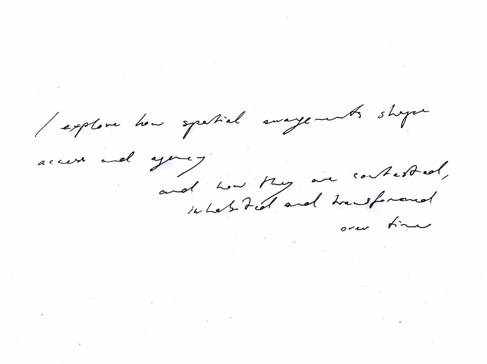

Hi

↓↓↓↓↓↓↓↓↓↓↓↓↓↓↓↓↓↓↓↓↓↓↓↓↓↓↓↓↓↓↓↓↓↓↓↓↓↓↓↓↓↓↓↓↓↓↓↓↓↓↓↓↓↓↓↓↓↓↓↓↓↓↓↓↓
Space Time Transect
with Eliott Croubalian
We drew the line of our transect at the fringe of the city, with the panke in the middle, a strip of autobahn running left and train tracks right of it. As we meandered around our line we saw ourselves walking through time and space, only experiencing the state of our environment at the exact time of our observation. Had this always been peripherie, was it countryside before? Swallowed by Berlin? In our research, the Panke River serves as a primary example of a territory in constant transformation. Shaped first by glacial melt, the landscape remains in motion and the river would slowly erode its own path, were it not for our anthropological impact. We find ourselves unable to see the territory as a fixed condition. Our goal was set to visualize time as an active physical force, one that produces both change and compression.
Exploring this, we developed the space-time transect. This instrument rests on two conceptual operations. First, we flatten spatial depth: the vertical space of a traditional map is compressed until geography becomes a single horizontal line of distance, x. Then we replace the vertical axis with time, t. In this way, we give up spatial depth in order to gain temporal depth. The result is a map that allows historical events and material conditions to be grasped with an intuitive understanding of what we are already used to from reading space-dimensional maps. We imagine Geological strata, ownership patterns, and hydrological traces along a timeline can then be understood and made accessible.
Access the Project site
HERE

accompanying literature:


Midterm status, SS 2026. The project is still very much a work in Progress
Built to fail
with Anika Gercke
Mapping Damage
at ZRS Architekten Ingenieure, Berlin
Damage mapping as preparation for structural assessment and restauration of the remaining Structure. Based on a Holzschutzgutachten, Point cloud scans and personal inspection of the building. Modeling of the Dachstuhl, Cartographic analysis of damage and development of system for representation (IFC DataBases) of damage as part of my working student role at ZRS Architekten, Berlin.


Date House Report


perspektiv;wechsel

Stegreif project in the course Strategien für nachhaltiges Planen und Bauen. The brief called for designing approx. 160 m² of residential floor space in a building gap — including an apartment for 4 people with a private outdoor area, and a separately rentable annexe apartment. The aim was to develop strategies for well-lit, energy-efficient housing within challenging parameters. My submission was deemed unassessable and recorded as not completed.
Why Fence?
with Leonie Ettmüller
Click
with Franz Muenzing and Joshua ??
12-line
As it rains, the soil gets wet
with Manuel Rademaker

Es regnet, es regnet,
die Erde wird nass!
Und wenn's genug geregnet hat,
dann wächst auch wieder Gras!
(German nursery rhyme)
Es regnet, die Erde wird nass.
I’m sitting here looking at this exposed patch of ground.
No Thing, no plan, only a beginning.
The ground is open again.
It could absorb water, hold roots, regulate temperature.
Already, a thin green film is spreading across the surface.
Accomplished through subtraction rather than addition.
The removed material lies beside me—enough to sit, rest, and stay.
Nothing here is complete.
No promises were given. It is a simple principle:
Exposing not condensing.
As it rains, the soil gets wet.
Submitted to the competition 30 Square Metres of Building Culture. The project was not chosen to become reality.
BRENNER
| Education | |
| 2019 Abitur | General university entrance qualification — Evangelisches Gymnasium Hermannswerder, Potsdam. Grade: 1.3 |
| 2016 – 2017 | Exchange year in Japan, Niigata Prefecture, Shibata (AFS) |
| 2019 – 2020 | Grundstudium "MINTgrün", Technische Universität Berlin |
| 2020 – 2025 | B.Arch. Architecture and Urban Design, FH Potsdam. Grade: 1.1 |
| 2022 (winter semester) | Erasmus+ exchange semester, Politecnico di Milano |
| since 2025 | M.Arch. Architecture program, TU Berlin |
| Practice | |
| August – October 2023 | Internship at ZRS Architekten Ingenieure, Berlin |
| November 2023 - April 2026 | Working student at ZRS Architekten: Construction documentation, green roof planning, energy-efficient timber retrofit, visualisation, point cloud processing |
| Software | |
| ArchiCAD (+++), Vectorworks (++++) | |
| Blender (+++), Cinema 4D (++) (Corona) | |
| InDesign (+++), Affinity (+), Photoshop (++), Illustrator (+) | |
| Premiere Pro (+), DaVinci Resolve (++) | |
| Nomad Sculpt (++), Procreate (+++) | |
| Microsoft Office Suite (+++) | |
| QGIS (+++) | |
| Languages | |
| German (native) | |
| English (C1) | |
| Japanese (N4) | |
| Italian (A1) | |
| Latin (Latinum) | |
| Engagement | |
| since 2021 | Co-founder of collective perspektiv;wechsel |
| 2023 (summer semester) | Advisory member, department council (FB2), FH Potsdam |
| 2023 – 2024 | Elected member, department council (FB2), FH Potsdam |
| Honors | |
| 2023 (summer semester) | 3rd Prize, student competition "Campuswohnen", FH Potsdam |
| 2023 – 2024 | Deutschlandstipendium scholarship |
| 2025 | Ehrenamtspreis der Fördergesellschaft der Fachhochschule Potsdam, as part of perspektiv;wechsel |
| Further | |
| 2013 – 2019 | Layout editor, school newspaper Der Tornowgraph |
| 2015 – 2019 | Certified school paramedic |
| 2016 – 2018 | Team leader, AFS Intercultural Encounters |
| 2018 – 2023 | Minijob, Boulderhalle 7a+ |
| Events that I took part in organizing at Collective perspektiv;wechsel | ||
| 24.05.2022 | Gendergerechte Stadtplanung | Sophia Lenz (M. Urbane Zukunft) |
| 30.05.2022 | design für alle — nicht nur barrierefrei, sondern attraktiv und komfortabel für alle | Matthias Knigge (Grauwert, Büro für Inklusion & demografiefeste Lösungen) |
| 07.06.2022 | postcolonial potsdam — kolonialgeschichte und postkoloniales schweigen in potsdam | Alexandra Wuest (Postcolonial Potsdam) |
| 22.11.2022 | HANDWERK × ARCHITEKTUR | Isabelle Vivianne; Jenny Hamerla & Isabel Schmidt (Baufachfrauen) |
| 29.11.2022 | Gendergerechte Stadtplanung — Einblicke aus der Praxis | Dr. Mary Dellenbaugh-Losse (Urban Policy) |
| 13.12.2022 | whose city? — Obdachlosigkeit, Architektur und die Stadt | Dr. Daniel Talesnik (Architekturhistoriker) |
| 25.04.2023 | Architektur und Mensch: Raum in Wechselwirkung mit Wahrnehmung, Körper und Gesundheit | Alexandra Correll (Fachärztin Neurologie) & Dr. Mathias Ballestrem (Programmdirektor Bauhaus Earth) (Both: Interdisziplinäres Forum Neurourbanistik e.V.) |
| 02.05.2023 | Baustelle Gleichstellung — Podiumsdiskussion | Karin Hartmann (Autorin: Schwarzer Pulli, Hornbrille); Katja Melan & Dagmar Chrobok-Dohmann (AG Gleichstellung der Brandenburgischen Architekt:innenkammer) |
| 23.05.2023 | Bezahlbar und Klimagerecht wohnen | Dr. Lisa Vollmer (Leibnizinstitut für Raumbezogene Sozialforschung) |
| 24.10.2023 | Realitätscheck Lehmbau | Dipl.-Ing. Ulrich Röhlen (Autor: Lehmbau Praxis, Planung und Ausführung) |
| 07.11.2023 | Kindgerechtes Bauen | Kathia Ecks & Lena Arnold (Baukind) |
| 21.11.2023 | Rurale Potenzialräume — Zukunftswerkstatt in Luckenwalde | Kollektiv Variable X (Clara & Lisa) |
| 05.12.2023 | Partizipative Planung | Fee Kyriakopulos & Helena Rafalsky (Baupiloten) |
| 28.05.2024 | Erfahrungswerte Baustelle — Podiumsdiskussion | Claudia Alvino (Architektin in Rothenklempenow) Bioboden und Artemisia); Etta Seifert Etta Seifert (Architektin und Designerin in Potsdam, AG Gleichstellung der Brandenburgischen Architektenkammer); Nicole Fienke (freischaffende Architektin Oranienburg, AG Gleichstellung der Brandenburgischen Architektenkammer); Magdalena Karbach (Architektin in Berlin bei ZRS) |
| Me on the panel — Reihe Nachhaltiges Bauen, FH Potsdam | ||
| 11.10.2023 | Was tun bei zunehmenden Wetterextremen wie Trockenheit und Starkregen? – Das Prinzip „Schwammstadt"! | Fachreferent: Prof. Dr.-Ing. Gunar Gutzeit (FHP) auf dem Podium mit: Prof. Maren Brakebusch (FHP, Büro VOGT), Dr. Darla Nickel (Regenwasseragentur), Friederike Böttcher (Alumna FHP) |
| 24.04.2024 | Die Wärme der Zukunft kommt aus der Erde – Praxisbeispiele und Erfahrungswerte für Geothermie | Fachreferent: Michael Viernickel (eZeit-Ingenieure) auf dem Podium mit: Eckard Veil (EWP), Prof. Dr. Ingo Sass (GFZ Potsdam) |
| 19.06.2024 | Die Natur der Zukunft wächst in der Stadt – an der Wand, auf dem Dach, auf Brachflächen | Fachreferent: Jakob Nolte (Botaniker und Biodiversitätsspezialist, Dozent) auf dem Podium mit: Marco Schmidt (BBSR), Claus Herrmann (hochC Landschaftsarchitekten) |
| 09.10.2024 | Die Baustoffe / Gebäude der Zukunft sind wiederverwendet – Erfahrungen und Beispiele | Fachreferent: Jurek Brüggen (Architekt) auf dem Podium mit: Carolina Mojto (Freiraum in der Box), Prof. Dr.-Ing. Klaus Pistol (FHP) |
| 04.12.2024 | Die Baukultur der Zukunft ist die Umbaukultur – von der „grauen" zur „goldenen" Energie | Fachreferent: Reiner Nagel (Bundesstiftung Baukultur) auf dem Podium mit: Prof. Silke Straub-Beutin (FHP), Frank Schönert (Hütten und Paläste) |